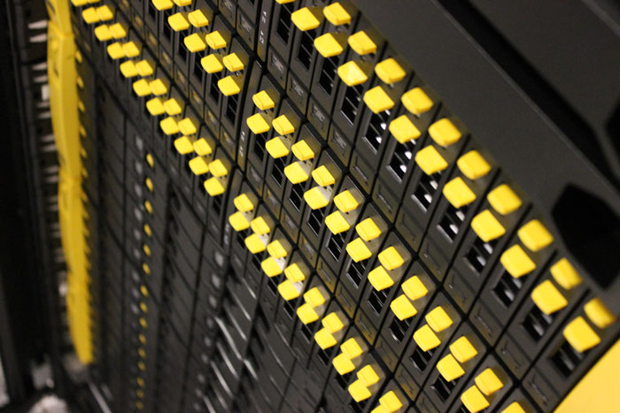

Systems & Software

User Support/Help Desk
505.277.6900
help@carc.unm.edu
Walk-in office hours with Dr. Ryan Johnson
Monday 10am to noon
Thursday 1-3pm

505.277.6900
help@carc.unm.edu
Walk-in office hours with Dr. Ryan Johnson
Monday 10am to noon
Thursday 1-3pm

CARC supports a wide range of open source and licensed computational chemistry and materials physics software, from the first-principles electronic structure of molecules and materials to force field-driven and ab initio molecular dynamics and mechanics. A list of codes and software packages that are currently installed on CARC machines can be found below. To request the installation of additional codes, please submit a help request to help@carc.unm.edu.
Custom workshops for specific application domains (chemistry, nanoscience, materials) or workflows can be designed in collaboration with CARC Applications Scientists and Systems staff. For inquiries, please contact director@carc.unm.edu.
Key: PW = planewave, AO = atomic orbital
| Code/ Software Suite | GPU Accelerated? | Brief Description |
Periodic/Supercell or Free (non-periodic) |
Basis set | Installed versions | Machines |
| Abinit |
Yes |
Electronic Structure | Yes | PW | 7.0.5, 7.4.2, 7.8.2 | nano, Gibbs, Ulam |
| ADF | Yes | Electronic Structure | Both | AO | 2012, 2013, 2014 | nano, Gibbs |
| ASE | No | Visualization | N/A | N/A | 3.8.1 | nano, Ulam |
| ATK | No | Electronic Structure | Yes | AO; PW via abinit | 2015 | nano, Gibbs |
| GAMESS | Yes | Electronic Structure | No | AO | 2009Jan12 | nano, Gibbs, pequena, |
| Gaussian | No | Electronic Structure | No | AO | 03, 09 | nano, Gibbs, pequena, Ulam |
| GPAW | Yes | Electronic Structure | Yes | both | 0.10.0 | nano |
| GROMACS | Yes | MM/MD | N/A | N/A | 4.5.5, 4.6.2, 4.6.3, 5.0.5, 5.0.6, 5.1 | Xena, nano, pequena, Gibbs, Metropolis, Ulam |
| LAMMPS | Yes | MM/MD | N/A | N/A | 5May13, 28Jun14, 5Sep14, 10Aug15, 7Dec15 | pequena, nano, Xena, Ulam, Galles, Metropolis |
| Molden | No | Visualization | N/A | N/A | 5.2.2. | nano |
| Multiwfn | No | Wavefunction Analysis | N/A | N/A | 3.3.7 | Gibbs |
| NAMD | Yes | MM/MD | N/A | N/A | 2.7b1, 2.9, 2.10, | Xena, Metropolis, nano, pequena, Gibbs, Ulam |
| NWCHEM | Yes | Electronic Structure | Both | Both | 5.1.1, 6.1.1, 6.3r2 | pequena, nano, Gibbs |
| Octopus | Yes | Electronic Structure | Both | Grid | 5.0.0 | Xena, Gibbs |
| Orca | No | Electronic Structure | No | AO | 2.9.1, 3.0.0, 3.0.1, 3.0.3 | Nano, Gibbs, Xena, Ulam |
| Quantum Espresso | Yes | Electronic Structure | Yes | PW | 5.2.0 | Gibbs, Nano |
| VASP | Yes | Electronic Structure | Yes | PW | 4.6, 5.2.12 | Gibbs, pequena, Ulam |
| VENUS | No | Direct Dynamics | No | AO | 4.2013 | Gibbs |
| VMD | Yes | Visualization | N/A | N/A | 1.9.1, 1.9.2 | nano, Gibbs, Ulam |
There are a number of very helpful GUI-based based codes that can be installed on your local machine and used for building, visualizing and rendering structures, preparing input scripts, and analyzing the results of calculations. CARC also has very large visualization screens available for use in the Workshop Room. Email help@carc.unm.edu for more information or to set up an appointment.
| Code | Description |
| ASE | The ASE-GUI is a useful program for constructing, visualizing and manipulating periodic structures. |
| Avogadro | Open source program that supports building input scripts for codes such as Gaussian, Orca, and NWChem. |
| Chimera | A highly extensible program for interactive visualization and analysis of molecular structures and related data, including density maps, supramolecular assemblies, sequence alignments, docking results, trajectories, and conformational ensembles. Publication quality images and animations can be generated |
| GaussView | Proprietary program for use with the Gaussian code. |
| Jmol | An open source Java-based visualization tool for molecular systems. Can be used to view trajectory files of the type produced by Orca. Can also be imbedded in websites for viewing molecules online. |
| Open source visualization program. Can be used to view, render and animate structures. Scripting can be done in python. | |
| VESTA | Visualization program focused on periodic structures. Has functions for manipulating densities and predicting diffraction patterns. |
| VMD | Very powerful GPU-accelerated visualization and analysis program that can natively read structure or density files from many programs including, but not limited to pdb, xyz, VASP POSCAR, and Gaussian cube files. Has extensive analysis tools such as RMSD and PROPKA. Can also render very high quality images and animations using a number of different ray-tracing programs. |
Center for Advanced Research Computing
MSC01 1190
1601 Central Ave. NE
Albuquerque, NM 87106
p: 505.277.8249
f: 505.277.8235
e: info@carc.unm.edu